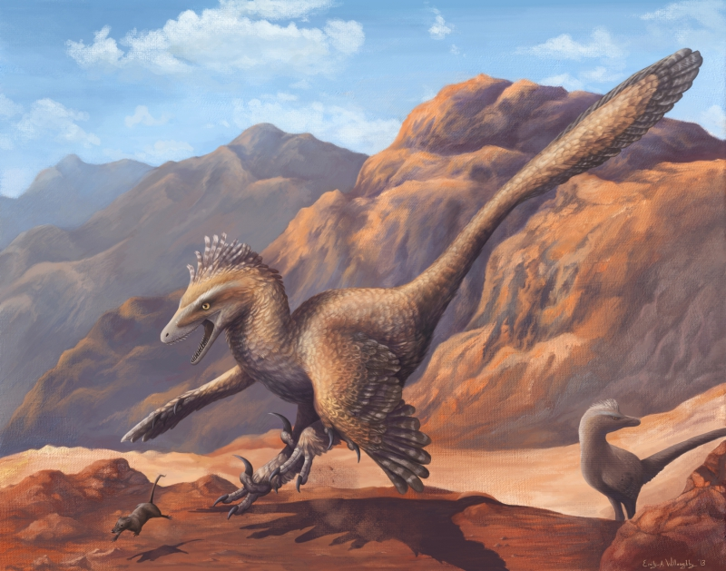
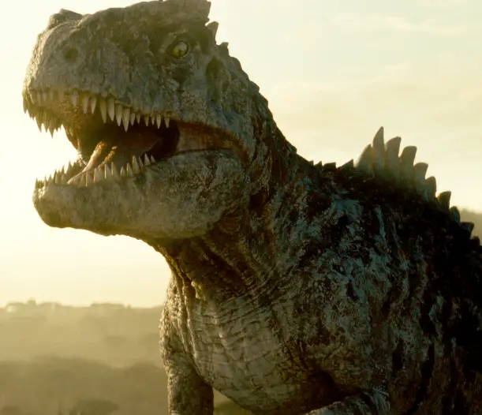
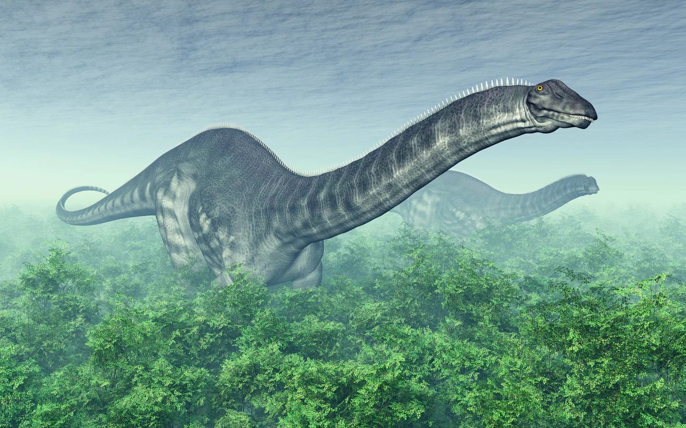
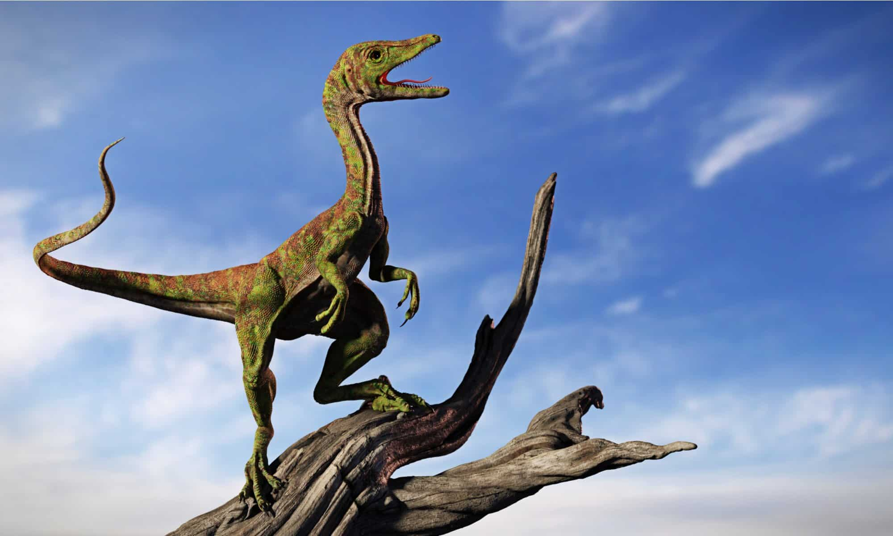

The Velociraptor lived in Asia, specifically the Mongolan area around 71-75 million years ago. This human sized beast could reach up to 6ft long from the snout all the way to the tip of the tail. The Velociraptor was a vicious carnivore that hunted in packs of up to 6 or more. They may have been small, but with a pack of decent size, they could take down very large predators such as the T-rex or the Spinosaurus; similar to wolves.
The Allosaurus was a 4 ton Carnivore that hunted in the open plains of Africa, Europe and North America. The Allosaurus preferred meals similar to the Stegosaurus and the Brachiosaurus, both very large herbivores. They lived about 145-155 million years ago, during the Jurassic Period.
.webp)
The Giganotosaurus was a massive carnivore that lived in the southern regions of Argentina duirng the late Cenomanian Period. They hunted the largest of dinosaurs and weighed over 8.8-10.5 tons on average, growing to 44.3ft long, they held the record for some of the largest meat eating dino's of their time.
Apatosaurus. One of the few herbivores that existed during the Tithonian period, and liviing in areas such as North America and Canada. The Apatosaurus grew up to 75ft long, 20ft tall at the hip. They typically ate Horsetail plants and enjoyed humbling around in forested areas, truly a calm dinosaur.
Nicknamed The Compy, the Compsognathus was one of the smallest yet most dangerous dinosaurs of its time, growing to only 4ft long at the most, 1ft tall at the hip. The Compsognathus was apart of the Compsognathidae family and lived during the Jurassic/Tithonian period(s) 150 million years ago. They hunted in large packs and could take down considerably large prey depending on the size and weakness of the target. Their diets were composed of European snacks such as lizards, small mammals and other dinosaurs.
